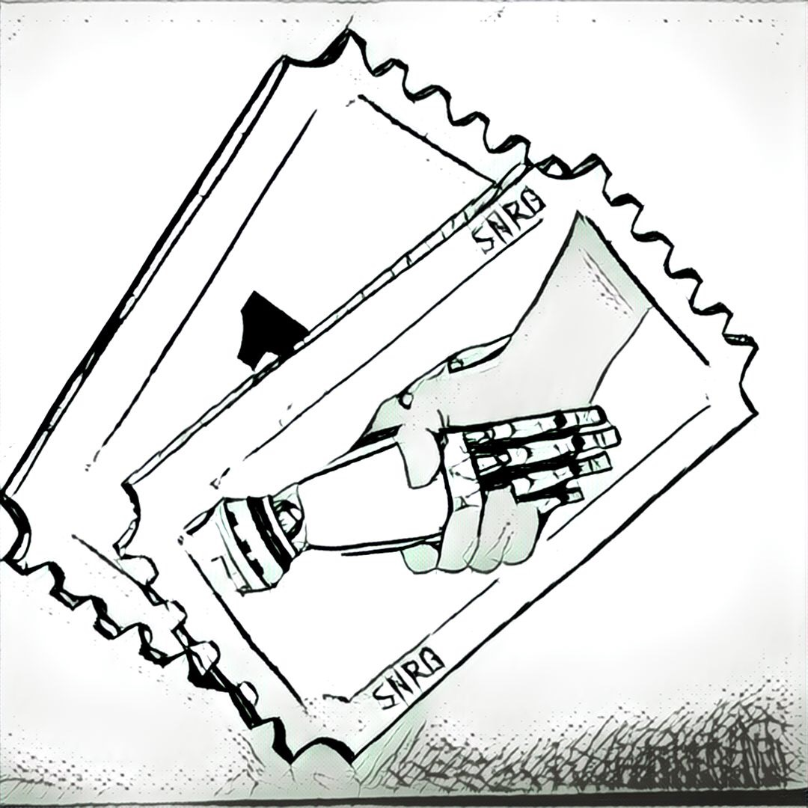
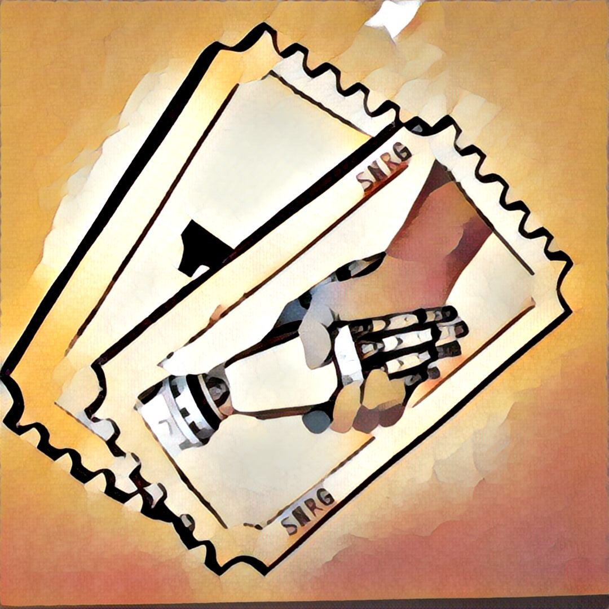
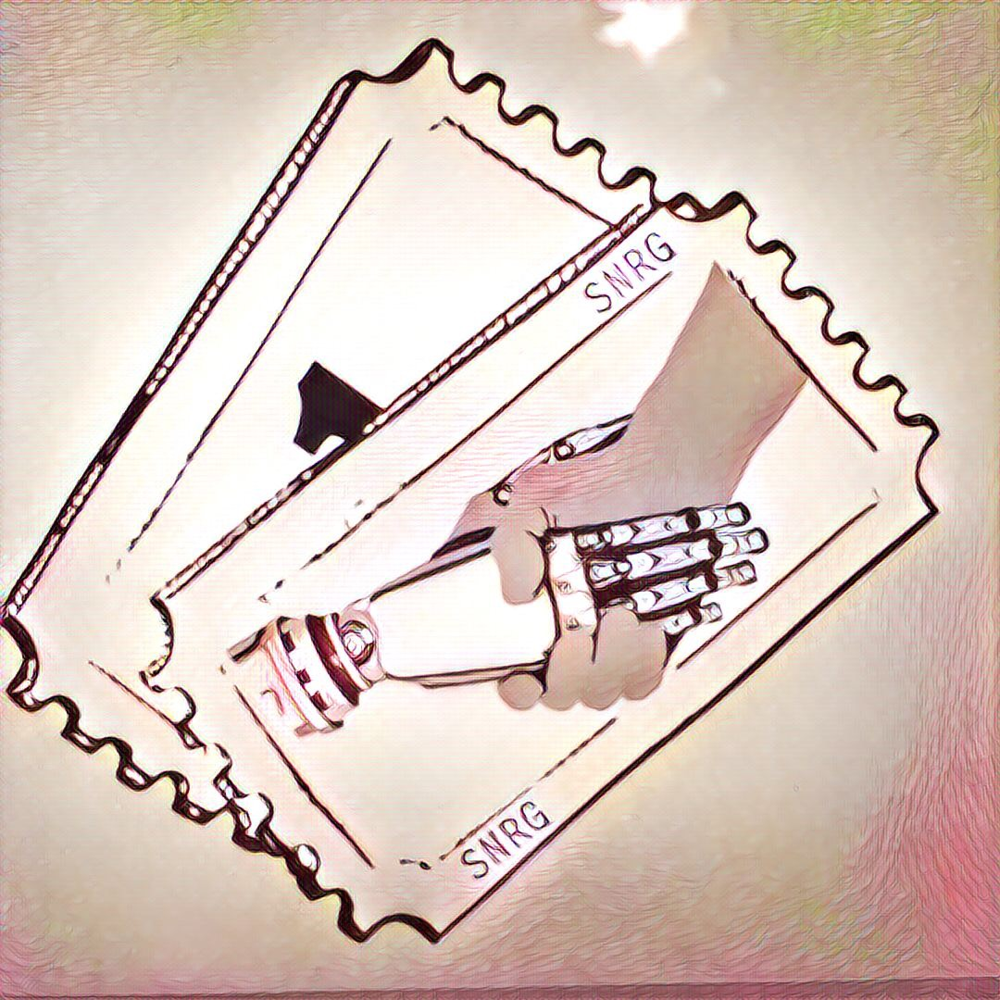
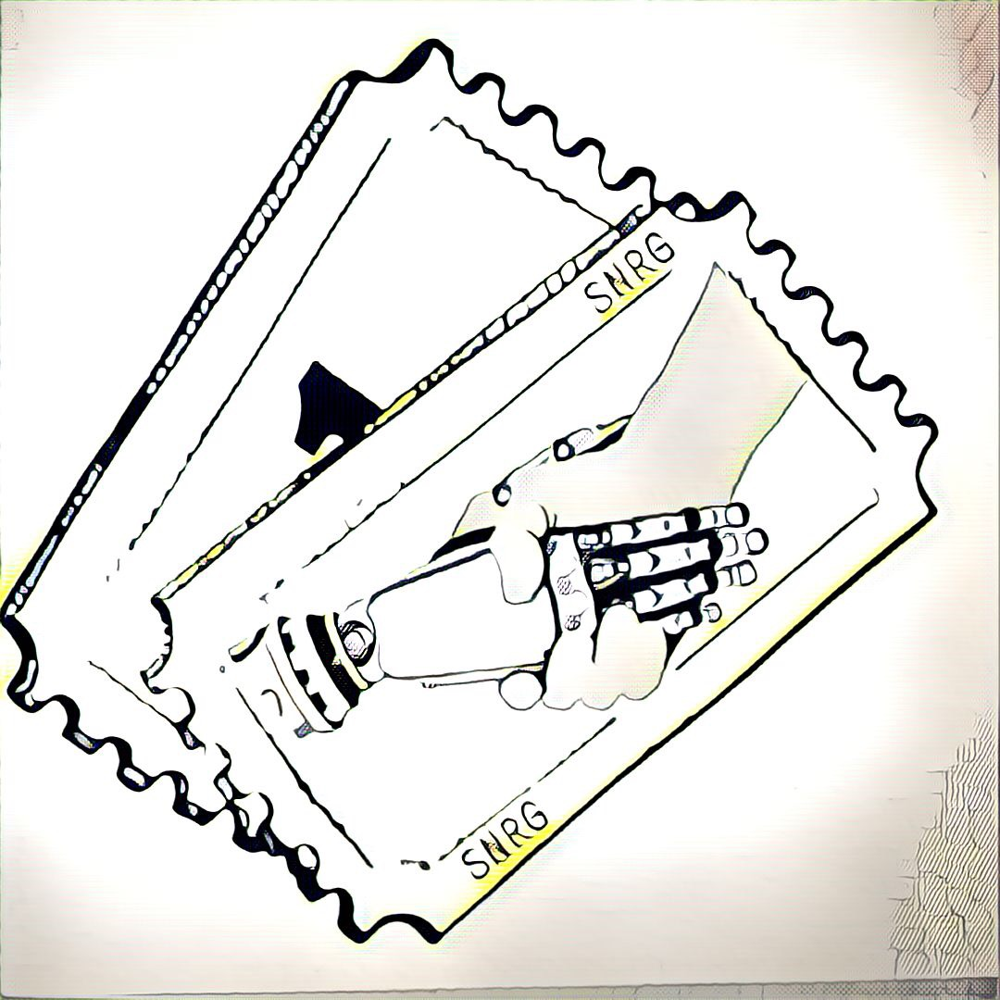
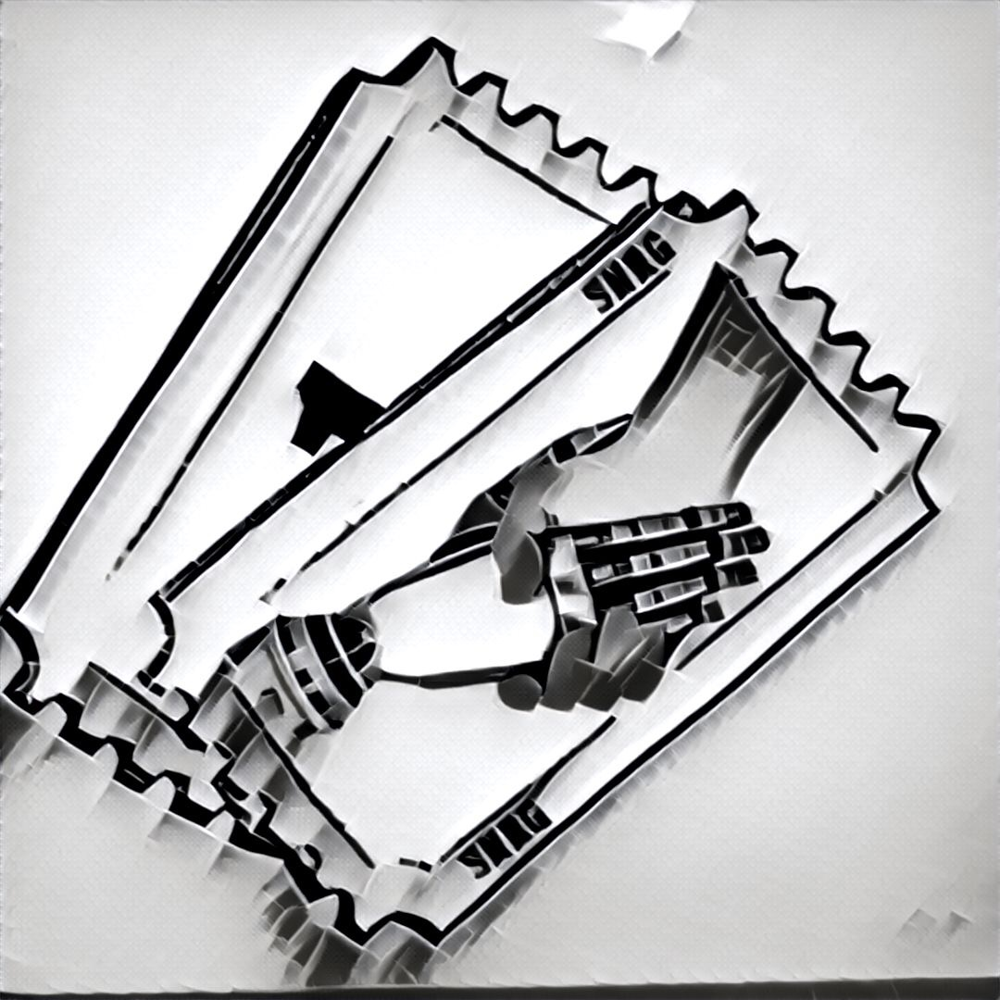
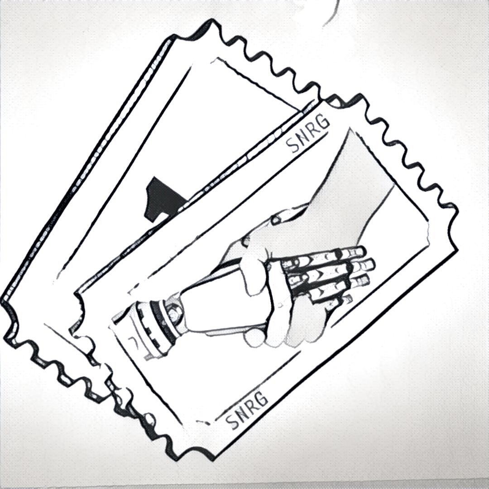
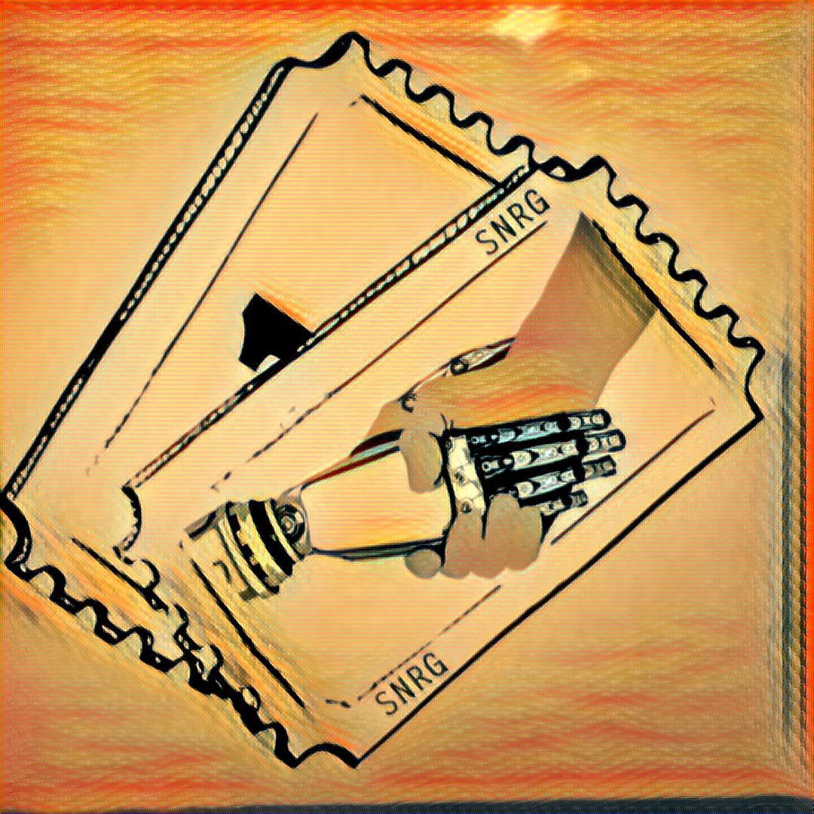
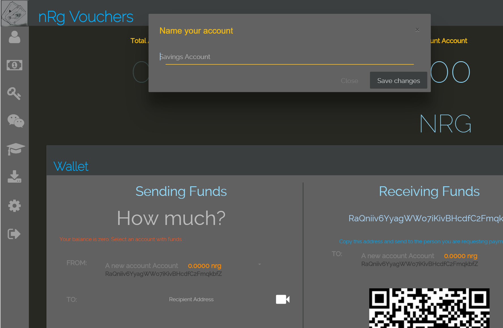

On Token Swaps & Re-Branding
I'm excited to announce the acquisition of the RibbitRewards Chaincode, Wallet(s), Block-explorer and various other pieces built to support the exploration of rewards on a blockchain.
The Mystery is over!
Most you are interested in the same things.
What does the future of RibbitRewards look like?
What is Shannon's Plan?
How will it work?
I'll start things off with a frequent asked questions to address the most obvious questions.
How about that Sweet Logo!
Here are a few pieces of art that came about while designing the logo.       
{kind=link}
{kind=link}
{kind=link}
{kind=link}
{kind=link}
{kind=link}
{kind=link}
Why did you acquire the currency and related software?
We built RibbitRewards to realize some advanced and forward thinking features for the loyalty industry. Since launching the currency we have learned many things about the technology's strengths and weaknesses. We realized that a modified clone of Bitcoin wouldn't provide us the versitility we needed in order to realize many of the fetures described in the early white paper. Our understanding of the Loyalty industry has grown along with the rapid growth of decentralized cryptographic ledger technology. As we outgrew our original business model and the first itteration of our technology I began thinking of a way to upgrade our early adopters.
A bit on the model
The original plan required a base token that every reward derived from. We realized as we began exploring the potential of what we were building that this would no longer need to be the case. We have since built a platform that enables anyone, from the small business owner to the seasoned mega corporations to create their own "Branded" rewards program. Allowing operators the ability to entirely manage the value, distribution, capabilities and features of their reward(s) within a trusted environment. With these features in mind it became aparent that the old rewards would need to adapt. I came up with a plan to transition the old rewards off of the legacy network and into it's own network within this newly build platform.
The RApp
As an employee of Loyyal I am granted the lifetime usage of the platform to create RApp programs. This is a huge plus for me as I have many exciting ideas that can be realized within this system being built. By acquiring the legacy program I can bootstrap my RApp offerings with every existing RBR owner.
Will the tokens be re-branded?
The "brand" Ribbit.me was not part of the acquisition. The use of any trademarked terms (outside the scope allowed by RApp operator agreement) belonging to Loyyal will be removed from exchanges, github, forums and software.
What's the new name?
RibbitRewards will henceforth be known as nRg Vouchers.
So... Is syn'Rg or nRg Vouchers an official Loyyal project?
Loyyal builds and supports a platform. The Loyyal network will be the underlaying network and protocol that connects millions of businesses and people. This will be made possible by enabling businesses (sometimes even competitors) to enjoy the benefits offered. syn'Rg is but one of those independant organizations participating within the network. syn'Rg will be an umbrella brand owned and operated by Shannon Code. syn'Rg brand will be fully transferable between any of the RApp's built by syn'Rg.
Will nRg Vouchers be accepted at programs or locations on the Loyyal platform?
From the moment of launch of syn'Rg's first RApp, the offer to issue on behalf of and accept rewards issued from those RApps will be open to other programs within the network. We will also participate in any cross promotions or networks that present themself within the network. One of the most exciting features is the ability to utilize rewards between programs and I plan on mximizing this utility in every way possible.
What types of RApps are in the works at syn'Rg?
While specifics will have to wait for another post, I can say that there are a handful of things that I am passionate about. API's, IoT, Virtual and Augmented reality and other bleeding edge technologies. One redemption option I'm currently exploring is the ability to use rewards points to purchase Groupon offers. Over the next few months you can expect to hear regularly about exciting new redemption options.
How can people earn rewards issued by your RApps?
This brings up a good opportunity to explain another exciting feature that the Loyyal platform enables. Part of the struggle to create a universal network offering is the "How do we interface with existing systems" question. We answered this by introducing a powerful feature. RApp events can be triggered by any API that can understand the concept of an identity. The potential might not be obviously apparent at first so lets imagine some of the things I plan to build:
- A reward program to reward my kids for doing projects on Khan Academy
- Rewards for brushing your teeth every day.
- Badges for checking off items from a bucket list.
- Virtual scavenger hunt (VR meets IRL)
- Virtual Travel Bug for GEO-Caching
- A program that can issue rewards in exchange for website & application vulnerabilities.
How will the upgrade work?
You do not need to take any action if you already have some amount of RibbitRewards. Those rewards will be forever known as nRg Vouchers. Some time in the future, you will have the ability to transfer nRg to some location in exchange for the syn'Rg reward type.
What about the Chain?
The chain will be decommissioned once the upgrade is complete. As with any crypto currency the community will decide it's fate.
And the Wallet?
The wallet has already undergone a fair amount of reskinning and is available here to use. The Wallet sorce-code will be released with a new OSS License, encouraging it's further development. Other components related to the wallet will also be made publicly available including the "Multi-spv" client that offers full SPV capabilities for nearly every altcoin.
-Shannon Code